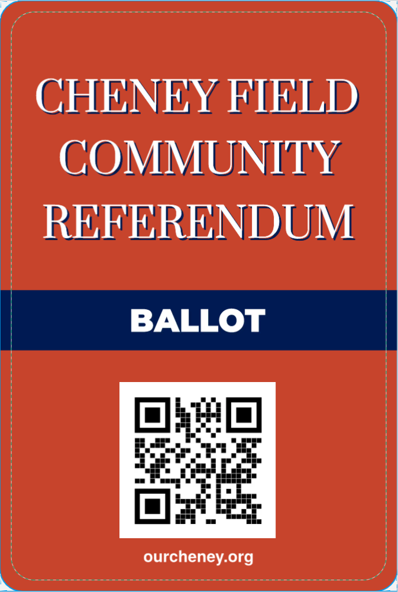
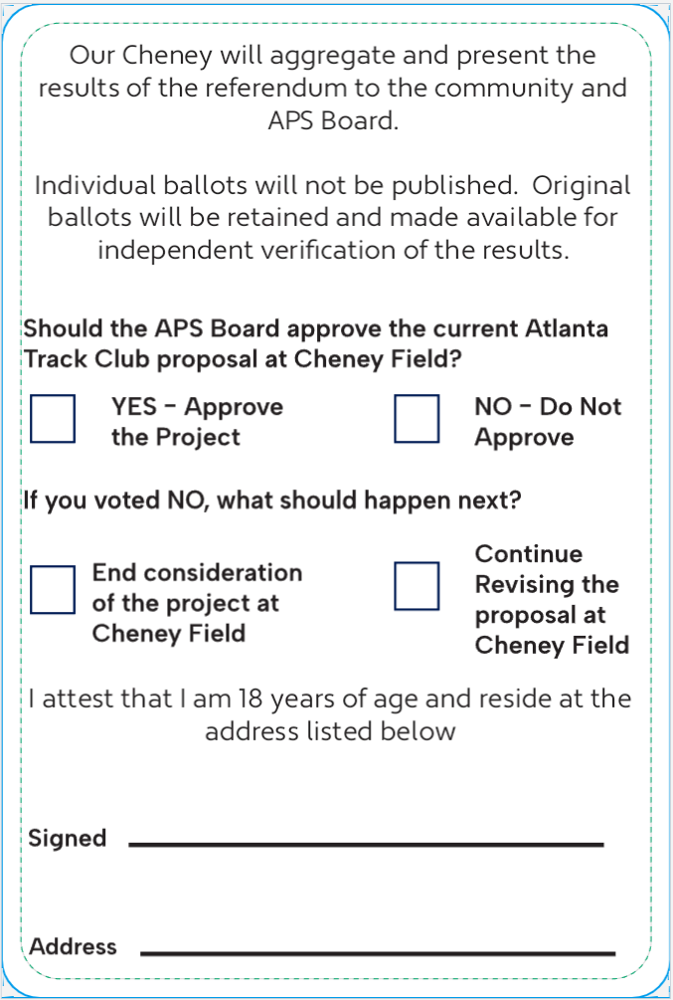

Help shape our community
Community Referendum
Our Cheney is coordinating a community referendum in the event that the Atlanta Track Club project is brought before the APS Board for approval. The goal is to provide the Board with a clear, verifiiable, and accurate measure of local community sentiment. We’re looking for volunteers to help share and collect ballots across the neighborhood.


If you are interested in volunteering, fill out the form. The role will be:
- Distribute ballots
- Provide a place for them to be returned
- Make multiple attempts to give every assigned household an opportunity to respond
If the form does not load, open it directly.
Referendum process
How it will work.
Ballots will be distributed to every residential address within the defined survey area. The size of the survey area will depend on the number of volunteers who sign up to canvass, but the final boundary will be established and published before ballots are distributed.
Every residential address within that boundary will be offered two ballots and each resident above the age of 18 will be eligible to vote. Additional ballots will be provided upon request.
Each ballot must include the respondent's address and signature so that responses can be verified and duplicate ballots prevented. One ballot will be counted per resident over the age of 18.
Our Cheney will make multiple attempts to give every household in the survey area an opportunity to participate. After voting closes, we will publish the number of eligible households, ballots returned, response rate, vote totals, and the methodology used to conduct the referendum.
Individual ballots will not be published. Original ballots will be retained and made available for independent verification of the results.